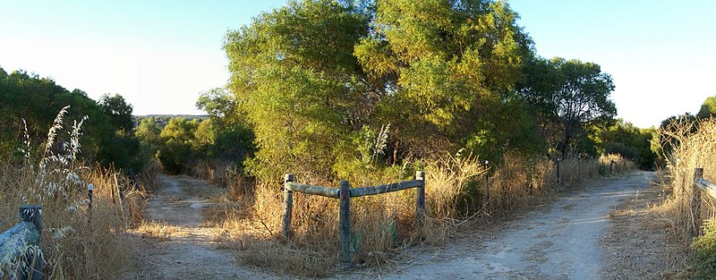

Start Your Adventure As A Hero!
This is you!
"Sleeping Knight" from Tumblr posted by user 'baconfather' 7 years ago
Your life is sad, very sad. Up until now you haven't had much of a chance to fix it. Once when you were a kid you dreamed of becoming a knight, saving people, but now you have become depressed and are going through a mid-life crisis. But thankfully, fate has bestowed you with another opprutunity to change your life, the opprutunity to go on an Adventure!
Do you decide to go on this journey?
You stayed at home and didn't decide to venture. Afterwards, you lived a fulfilling life and got married, had kids, got a job... No you didn't. You died that night of alcohol poisoning. No one found your body either because no one comes to visit you, ever.
"Dead body" from OPENCLIPART posted by user 'Firkin' 2018
You begin your adventure!
You have packed up and are finally on the road, and can finally leave your old, sad, worthless, horrible life behind you now, and can finally make use of the life you are unworthy of bearing. Anyways, the trail splits into two pathways. The one on the right you can hear coyotes howling, and on the left you can hear a bear. With the weapons you have currently, you have a decent chance of winning a fight against the bear, but you could have a garunteed chance of winning against the nearby coyotes if there is a small number of them. Problem is, you have no idea how many there are. Which path shall you choose?
Good News!
I was just joking, bad news. The trail merges ahead and now you must face both the lion and the coyotes. Judging from the looks of it, this might be the biggest brown bear, ever, and the biggest pack of coyotes, ever. Thankfully they are fighting each other... Nope, they spotted you and are now ganging up on you. This is quite unfortunate. Fortunatley, you brought plenty of weapons! You brought a bow, broadsword, nunchucks, and a bomb. If you choose the bomb, you could also suffer major damage. Which do you choose?
Bad News!!!
Just kidding, good news! Through your valiant efforts and smart attack strategies, you were able to defeat both the coyotes and the bear! You're life might actually be worth something!(might) You can now continue your quest, except for one thing, you hear a lot of noise coming from your right, it sounds like a city.
Do you choose to venture through the forest or continue on your path?
You hit yourself
You have never used nun chucks before and ended up hiting yourself in the head. Nun chucks are a lot harder to use than you might think. Thankfully though, the coyotes immediately loss interest in your limp, weak, unconscious body and left you alone. After some time, you wake up in a house. You smell something strange, almost like someone is cooking spoiled fish in rotten eggs. You decide to sit up in bed, and thats when you see a witch! You need to escape fast, should you attack the witch, escape through the window, or run out the door?
Kaboom!
The bomb explodes, exploding the coyotes and the bears. Your plan was a success, but now there is a big crater in the ground. When you look closer at it, there seems to be some sort of tunnel at the bottom of the tunnel. You could go down there, or you could continue on the trail's path. What do you choose?
You continue your journey
You keep following the trail, now with a new sense of pride resting on your shoulders. You finally were able to achieve something in your previously pitful life. As you think about what you have just done, you notice the sky begin to darken, and you feel a drop of rain hit your nose. Quick! You must find a place to hide or you will suffer a fate worse than death, you will become Waterlogged!
Wandering Through a Forest!
You drift off the main path of the trail you were previously following and push yourself through bushes, past trees, and into the deep wilderness where you eventually stumble upon a road made of stone. You follow the path, which eventually leads to a big city nearby, but there's one problem, it's completley quiet. There isn't a noise to be heard or a person to be seen in this town, and as you walk into the city, you notice that all the doors have been kicked down. It doesn't look like there is much here? Where shall you go?
A Stranger approaches!
A stranger in a black cloack approaches you on the trail you were jus travelling on. You can't make out anything about them, so you can't tell whether or not they are hostile. Should you attack them or let them approach?
You charge at full speed!
You tripped and fell on a shoe into her pot. You can hear her cackle as your body is englufed by the stew, slowly dropping to the bottom where you dissolve into the surrounding liquid. If you have to ask me, this might be the worst way to die. This journey's end was the saddest, and not in the sentimental way. You died!
You plummet towards your death
With how high this witch's tower is, it might as well be a sky scraper! You jump out of the windown and plummet to your death, but not before the witch's cackle rings in your ears at the top, and stays until you reach the bottom. You died!
You make a dash for the Door!
But not before the witch teleports in fronts of you and knocks you over. She gets on top of you and puts you in an arm lock, breaking your arm, then flipping you over for a leg lock, breaking your leg. Finally, she suplexes you and gets you in a chokehold. As she chokes you out, you can see her gold wrestling medals being displayed on a shelf. You can hear the witch cackle as your vision blurs, and turns to blackYou died!